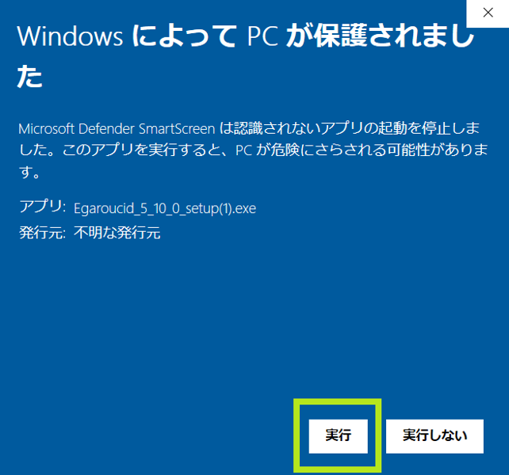

Egaroucid ダウンロード
インストール版とZip版があります。
ダウンロード
以下から自分の環境に合ったものをダウンロードしてください。
EgaroucidはSIMDバージョン(AVX2が必要)に最適化して作っていますが、こちらは概ね2013年以降のCPUでないと動作しません。その場合にはGenericバージョンを使用してください。
インストール版はインストールが必要です。
Zip版はZipファイルを解凍し、中のEgaroucid_[バージョン情報].exeを実行してください。
| OS | CPU | 追加要件 | リリース日 | インストール版 | Zip版 |
|---|---|---|---|---|---|
| Windows | x64 | AVX2(標準) | 2023/07/09 | Egaroucid 6.3.0 SIMD インストーラ | Egaroucid 6.3.0 SIMD Zip |
| Windows | x64 | - | 2023/07/09 | Egaroucid 6.3.0 Generic インストーラ | Egaroucid 6.3.0 Generic Zip |
過去のバージョンや各バージョンのリリースノートはGitHubのリリースからご覧ください。
インストール
インストール版の場合、ダウンロードしたインストーラを実行してください。管理者権限が必要です。
「WindowsによってPCが保護されました」と出た場合は、「詳細情報」をクリックすると実行することができます。ただし、この操作は自己責任で行ってください。

実行
インストールまたは解凍したEgaroucid_[バージョン情報].exeを実行するとEgaroucidが起動します。

book形式の変更について
Egaroucidはバージョン6.3.0からbook形式を変更しました。新しいbookの拡張子は.egbk2です。6.2.0以前のバージョンをお使いで新しく6.3.0をインストールした場合、初回起動時に古い.egbk形式のbookを自動で変換します。また、古い形式もbookの参照および統合機能が使えます。ただし、保存形式は新しい.egbk2形式になります。